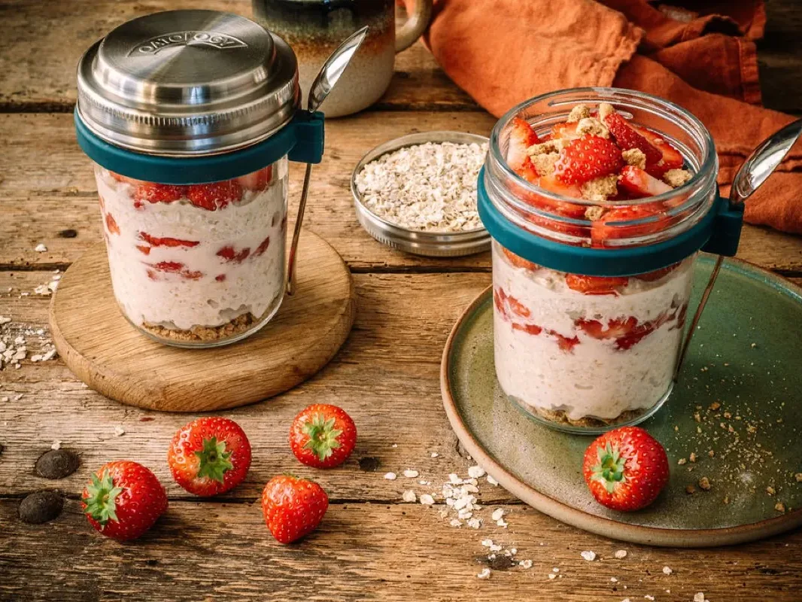
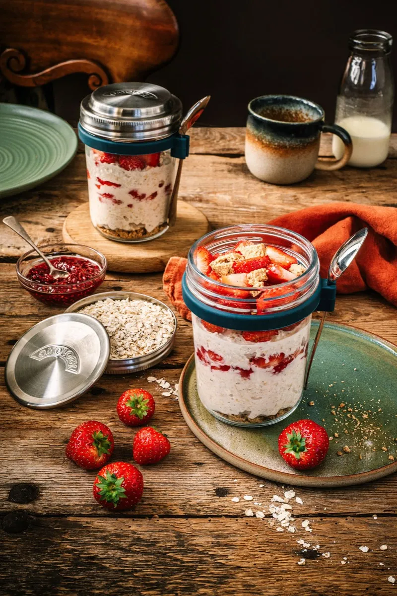
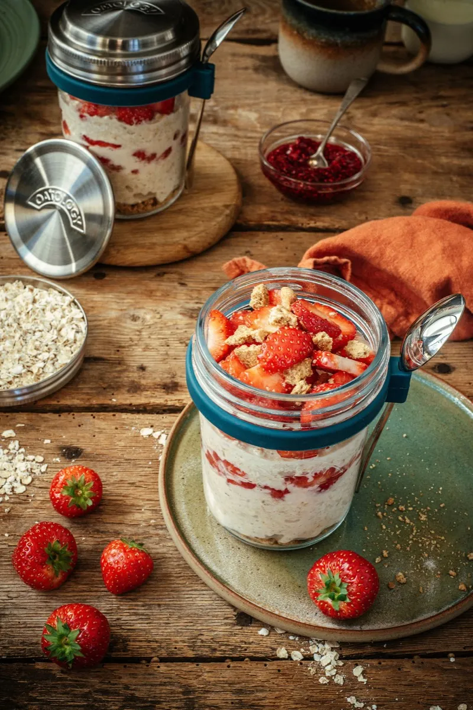
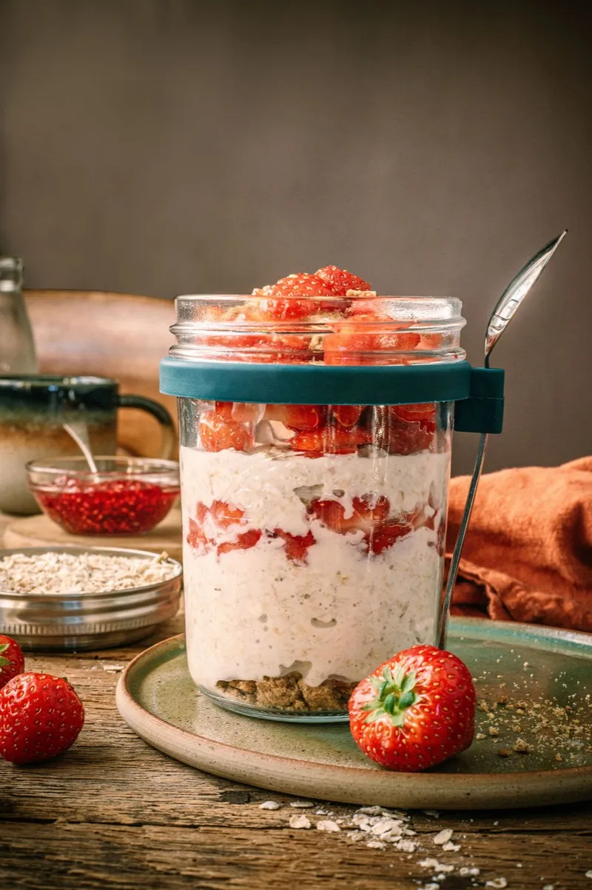

Strawberry Cheesecake Overnight Oats
Strawberry cheesecake overnight oats take about 10 minutes to prepare: mash 6 to 8 fresh strawberries with a little honey in the base of a jar, then stir in 50g rolled oats, 150ml milk, 1 tbsp cream cheese, ½ tsp vanilla, and a pinch of salt. Refrigerate overnight and by morning they are smooth, thick, and pudding-like. One jar comes to roughly 500 calories, with about 15g of protein and 11g of fibre.
This is the most indulgent recipe on the site: smooth, sweet, and about as close to pudding for breakfast as overnight oats get. Mash half the strawberries into the base so their juice runs through the oats, keep the rest back for the top, and finish with a little crushed biscuit for that cheesecake-base crunch.

The recipe
Ingredients
- 50g / generous ½ cup rolled oats (one lid)
- 150ml / scant ⅔ cup milk of choice (to the milk line)
- 1 tbsp cream cheese
- ½ tsp vanilla extract
- 1 tbsp honey or maple syrup, to taste
- A pinch of sea salt
- 6 to 8 fresh strawberries, to taste
- 1 tbsp chia seeds (optional)
- Crushed biscuit, for topping (optional)
Method
- In the bottom of your jar, mash half of the strawberries with half of the honey or maple syrup.
- Add the remaining ingredients, reserving the rest of the strawberries and the crushed biscuit for topping.
- Stir well until fully combined.
- Cover and refrigerate overnight.
- Top with the reserved strawberries and crushed biscuit to taste.
Tips and variations
- Make it lighter: use light cream cheese and drop the honey to 1 tsp, letting the strawberries carry the sweetness.
- No chia seeds: leave them out and it still sets from the oats and cream cheese, slightly softer.
- Feeling indulgent: a heavier hand with the crushed biscuit turns it into cheesecake for breakfast. We will allow it.
The jar we make it in
Every recipe on this site is written around the OATOLOGY jar: the lid measures the oats, the milk line measures the milk, and the sealed lid means it travels without leaking. No scales, no guesswork. Your own jar works too, anything sealable with room for a good stir.
Get the OATOLOGY jar on Amazon 2-pack, amazon.co.uk Weighing up options? Our honest guide to overnight oats jarsYour questions, answered
Is the cream cheese safe left in the fridge overnight?
Strawberry cheesecake overnight oats are safe with cream cheese stirred in for up to 3 days in a sealed jar in the fridge, kept at 5°C or below (the Food Standards Agency's recommended fridge temperature). Cream cheese is a fresh dairy product, so eat within those 3 days and keep the jar sealed.
How do I make strawberry cheesecake overnight oats lighter?
Strawberry cheesecake overnight oats come to roughly 500 calories as written. To lighten them, swap to light cream cheese, use skimmed or unsweetened almond milk, and cut the honey to 1 tsp. Leaning on the strawberries for sweetness and skipping the biscuit topping can save around 100 calories.
Which biscuit is best for the topping?
Strawberry cheesecake overnight oats work best topped with a crushed digestive biscuit, or a graham cracker if you are in the US, for that classic cheesecake base flavour. One biscuit, roughly crushed, is plenty for a single jar. Add it right before eating so it stays crunchy rather than softening overnight.
Are strawberry cheesecake overnight oats healthy for breakfast?
Strawberry cheesecake overnight oats are the most dessert-like recipe we make: roughly 500 calories with about 15g of protein and 11g of fibre, made with semi-skimmed milk. The oats, chia, and strawberries do real work, but the cream cheese and honey make this a treat breakfast rather than an everyday one.
Can you make strawberry cheesecake overnight oats dairy-free?
Strawberry cheesecake overnight oats are not dairy-free as written, because of the cream cheese. To make them dairy-free, swap in a plant-based soft cheese and use any plant milk, oat milk keeps it creamiest. Choose maple syrup over honey too, and the same 150ml milk gives the same overnight set.
A closer look


